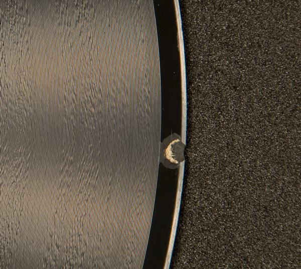

Audiovisual Formats
Grooved Disc
Printable PDF version of this page

Shellac-type Discs

Laminate-type Discs
(Acetates, Lacquers, etc.)

Vinyl Discs
Shellac-Type Discs
Description: Shellac-type is a coarse grooved-disc recorded sound format made up of varying components, but typically include clay (Byritis), powdered shellac, lampblack, cotton fibers (originally known as Durinoid), and may contain other resins, plasticizers, hardeners, and fillers (Stauderman, 2003). Shellac discs are most commonly one of the following sizes: 7 inch, 10 inch, 12 inch, and 16 inch. They are typically played back at the following speeds: 70 rpm, 78 rpm, and 30 rpm (Stauderman, 2003).
History The earliest discs are made of a shellac-type material, and were available from 1897 to the late 1940s.
Prone to the Following Problems All grooved disc media is susceptible to warpage, breakage, groove wear, and surface contamination (Farrington,1991). Surface contamination includes dirt, dust, mold, and other foreign materials—all of which can abrade or damage the grooves and diminish playback sound quality. Excessive surface damage and groove wear are generally identifiable on discs which have a dull surface and scratches, pits, and cracks.
Risk Level Inherent in Format Shellac-type 78s manufactured post-WWI are relatively stable and not considered especially vulnerable to age-related deterioration or inherent vice (Paton, 1998). Pre-WWI discs may be composed of more volatile materials and may require greater preservation attention (IASA, 2003). Presently, playback equipment for this format is still being manufactured.
Issues Related to Playback All grooved disc media must be played back at the appropriate recording speed, require appropriate styli for optimal playback fidelity and to reduce disc damage, and equipment that can support the discs' diameters. Most discs recorded before 1948 have wider grooves (often referred to as "coarse" or "standard" grooves), were recorded using equalizations that differ from current standards, and are generally monaural (Paton, 1998). A stylus which can support coarse groove and monaural recordings is necessary for proper playback.
Often, early 78s were not cut at exactly 78 rotations per minute (rpm), so correct speed may not be standardized from one disc to the next. Additionally, groove size varies, so a variety of different styli are necessary to ensure that you are not using too small or too wide of a stylus, which can adversely affect playback quality and/or irreparably damage the disc.
Recommended Storage Conditions(+/- 2)
| Best Temp (degrees F) | Good Temp (degrees F) |
|---|---|
| 40-54 º | 33-44 º |
Laminate-Type Discs (Acetates, Lacquers, Instantaneous, etc.)
Description: Laminate-type is a grooved disc recorded sound format composed of cellulose nitrate or acetate cellulose lacquer on an aluminum, glass, or zinc core (Stauderman, 2003). The most common sizes include: 10 inch, 12 inch, 13 inch, or 16 inch; although atypical, smaller and larger disc sizes can be found in collections.
History Laminate-type discs were in use predominantly in the 1930s to 1940s, until magnetic tape became widely adopted. They were often used to record radio broadcasts and dictation.
Prone to the Following Problems All grooved disc media is susceptible to warpage, breakage, groove wear, and surface contamination (Farrington,1991). Surface contamination includes dirt, dust, mold, and other foreign materials—which can abrade or damage the grooves and diminish playback sound quality. Excessive surface damage and groove wear are generally identifiable on discs which have a dull surface and scratches, pits, and cracks. Laminate-type discs are prone to unpredictable and sudden catastrophic failure due to surface delamination; the lacquer coating can contract on the core, often due to being stored in an environment with high humidity and/or temperature. It can crack or peel away from the core, causing information loss. Additionally, laminate discs may suffer from plasticizer loss, which causes the disc coating to become brittle and can lead to delamination. Plasticizer loss, or exudiation, is identifiable as a white, greasy powder with a crystalline appearance that appears on the disc's surface. It is often mistaken for mold, but is in fact the fatty acids (palmetic or searic) which migrate to the disc's surface as the plasticizers begin to deteriorate.
Risk Level Inherent in Format Laminate-type discs are prone to unpredictable and sudden catastrophic failure due to surface delamination; the lacquer coating can contract on the core, often due to being stored in an environment with high humidity and/or temperature, and can crack, causing information loss. Additionally, laminate discs often contain unique and original material, since content is captured and inscribed to the disc immediately. These discs are not created through a molding process like most other types of grooved discs. Instead, the discs are "direct-cut": the same discs are used for both the recording and the replay without the need for galvanoplastic processing and pressing (Paton, 1998). Since these discs are prone to sudden failure and signal loss and often hold unique content, they are considered a high priority for preservation reformatting.
Issues Related to Playback All grooved disc media must be played back at the appropriate recording speed, require appropriate styli for optimal playback fidelity and to reduce disc damage, and equipment that can support the discs' diameters. Laminate discs may also play from the inside out; the starting groove begins near the center of the disc, opposite of how most LP records are played. Most discs recorded before 1948 have wider grooves (often referred to as "coarse" or "standard" grooves), were recorded using equalizations that differ from current standards, and are generally monaural (Paton, 1998). A stylus which can support coarse groove and monaural recordings is necessary for proper playback.
Recommended Storage Conditions(+/- 2)
| Best Temp (degrees F) | Good Temp (degrees F) |
|---|---|
| 40-54 º | 33-44 º |
Vinyl Discs
Description: Vinyl is a grooved disc recorded sound format composed of polystyrene or polyvinyl chloride with stabilizers. It is sometimes known as "microgroove" or "long playing disc." The most common sizes are: 7 inch, 10 inch, and 12 inch.
History Plastic-based discs were developed in the late 1940s and are presently still in use.
Prone to the Following Problems All grooved disc media is susceptible to warpage, breakage, groove wear, and surface contamination (Farrington,1991). Surface contamination includes dirt, dust, mold, and other foreign materials—all of which can abrade or damage the grooves and diminish playback sound quality. Vinyl discs are especially prone to scratches and abrasion due to its relatively soft material. If stored in an ideal environment (relatively low and stable temperature and humidity), vinyl discs are stable. However, high humidity and temperatures can adversely affect these discs by creating prime conditions for fungal growth. High temperatures may also cause the plastics to soften and warp, reducing the disc's sound quality or playability. Additionally, direct sunlight and UV rays can adversely affect the soft vinyl material.
Discs can be damaged by attendant materials such as acidic cardboard sleeves and non-archival inner plastic or paper sleeves, although some plastic sleeves may be acceptable for archival storage. As a rule of thumb, "bad" sleeves are clear and have a sticky or tacky feel; "good" sleeves are frosted in appearance and have a slippery feel (Library of Congress, 2002). Non-archival sleeves should be replaced with high density polyethylene sleeves. If the original paper sleeve contains graphics or artwork that are of archival value, some archival sleeves may be thin enough to fit inside the original. In order to prevent migration of materials to the disc's surface, "many archivists choose to store microgroove discs in neutral plastic inner liners made of high pressure polyethylene contained in neutral envelopes, with acidic original covers stored separately" (Warren, 1993).
Risk Level Inherent in Format Vinyl-type 45s and LPs are not presently considered especially vulnerable to age-related deterioration or inherent vice (Paton, 1998). They are generally chemically stable and have a relatively long lifespan when stored properly. Playback equipment is still being manufactured. Therefore, discs of this type are generally a low preservation priority.
Issues Related to Playback All grooved disc media must be played back at the appropriate recording speed, require appropriate styli for optimal playback fidelity and to reduce disc damage, and equipment that can support the discs' diameters. Most discs of this type are microgroove; they have nearly twice the number of grooves as a coarse groove disc. Often times, these discs are stereo with standard equalization. However, "it is not wise to assume either that all postrecordings are microgroove, or that all recordings made after 1955 are stereo with RlAA equalization. Only examination of the discs and supporting documentation will clarify groove type" (Paton, 1998). Using too large of a stylus and too heavy weight tracking can gouge out the grooves on the disc, irreparably damaging the disc and preventing future playback./p>
Recommended Storage Conditions(+/- 2)
| Best Temp (degrees F) | Good Temp (degrees F) |
|---|---|
| 40-54 º | 33-44 º |
Disc - Material Composition
Grooved discs are generally composed of either shellac, a fiber, glass or aluminum core coated with a laminate, or vinyl.
Grooved discs materials At-A-Glance: (scroll down for more information and images)
Laminate discs:
- Laminate discs are discs composed of some type of plastic or resin surrounding a core.
- The core can be one of many types of material including cardboard, aluminum and glass. Glass discs are most fragile of all laminate discs
- Often have a handwritten or non-commercially printed label
- If you look into the spindle holes at an angle and you see a glint of metallic or brownish, paper-like material (or any material with otherwise appears different than the surface of the disc), it is most likely a laminate
- >Typically contain more than one spindle hole. Extra holes may be obscured by the label. You can determine if there are additional holes by shining a light source upward from beneath the disc. If there are additional holes, the light should be slightly visible as it is just passing though the label layers.
- May have surface peeling. If the surface of the disc is peeling (delaminating), and you see a material different than the surface material the disc is a laminate. Also, if the surface is peeling, the disc is beginning to fail.
- Depending upon the core material, laminate discs are often heavier than vinyl and lighter than shellac.
- Are often less flexible than a vinyl disc
- Occur in a variety of sizes ranging from as large as 20" and 16" to 7"
- Radio transcription discs are often 16" laminate discs
How to determine if the core is glass:
Shine some type of light source upwards from beneath the disc, or, ideally set the disc on light table. If the disc appears translucent (you can see the light through the disc) it is most likely glass.
- ARE EXTREMELY FRAGILE. Can easily break, or crack beneath the laminate surface
- If GENTLY tapped, sound slightly different than aluminum discs. WARNING: if you use this method, tap EXTREMELY gently as the glass may already be damaged.
- Are semi-translucent when light is projected through them
- Are slightly heavier compared to an aluminum-based disc
- Do not warp like fiber-based (cardboard) or aluminum-based laminate discs
- Most often are found in discs that were recorded between 1941 and 1945
Shellac discs:
- Are the oldest type of grooved disc; a disc manufactured prior to the late 1920s is most likely shellac
- Are commercial recordings, and should have commercially produced center labels
- Are typically heavier than vinyl or laminates, especially if the disc is thick
- Tend to be thicker than vinyl or laminates; although a notable exception is the wood-pulp core, and laminated Edison Diamond disc which is approximately 1/4" thick!
- Tend to be very hard compared to vinyl or laminates (are not as flexible as the other two disc types)
- Tend to have a dull surface compared to a well-preserved vinyl or laminate discs
- Are prone to shattering when dropped or bent
Vinyl discs:
- Are the most recent disc composition and is still presently in use
- Are typically commercially produced, and will have a commercially printed label
- Are generally much thinner, and more flexible than laminates or shellacs
Shellac:
Shellac discs are primarily composed of clay (Byritis), powdered shellac, lampblack, cotton fibers (originally known as Durinoid), and may contain other resins, plasticizers, hardeners, and fillers (Stauderman, 2003). Most shellac discs are solid throughout; the core is generally not composed of a separate material. There are some instances, however, when a shellac disc may have a cardboard core. These discs tend to be very hard, become brittle with age, are prone to shattering if dropped, and are susceptible to damage by mold and acidic substances (Warren,1994).
Shellac discs may not scratch as easily as vinyl and are generally stable if they have been stored in dry conditions. When examining these discs, you may notice signs of surface damage such as dirt, dust, mold, scratches, groove wear (the disc appears dull and the surface may have a whitish appearance), and brittleness. Be especially aware that shellac laminate discs (discs with a core made of cardboard or other material that is coated with shellac) can be more fragile. You may be able to assess if the disc is a laminate if you gently lift the record, tilt it slightly so that you can see into the center spindle hole, and look for any indication that the shellac is not solid. For example, you may actually see cardboard by looking through the spindle hole. When cleaning shellac discs, DO NOT use fluids that contain alcohol as it can dissolve the shellac (Gibson, 1987).

Shellac - Broken edge to illustrate this disc is solid shellac throughout
Laminate (a.ka. Lacquer/instantaneous/"acetate"/direct cut):
Laminatediscs can be made of aluminum or cellulose nitrate on a core. The core can be made of a number of varying materials, including glass, aluminum, and cardboard. These discs are susceptible to surface and core deterioration. The surface coating is prone to shrinking away from the core and to plasticizer loss, which appears as a whitish, mold-like contamination on the surface. Glass cores can easily break if not handled gently. Additionally, the core, depending on the material, is especially susceptible to damage from humidity. When assessing the condition of the disc, observe if there is any coating flaking off of the core. The coating holds the information content and grooves; it is therefore especially important to note any loss of the surface coating. Also look for a whitish powder on the surface. This could be mold, plasticizer loss, or other residue. The best way to determine if the contamination is mold is to observe the surface under a microscope. If the contaminant looks fuzzy or lattice-like, it is most likely mold; other substances may have a more crystalline appearance. Laminate discs are often of high priority for reformatting due to their fragility. As Laminatediscs are direct-cut discs (that is, the content is etched directly into the disc at the time of recording) they are often unique and the content may not be found elsewhere.

disc with cardboard core exposed through crack in laminate
Vinyl/Plastic:
Compared to shellac and other grooved disc materials, plastic is relatively soft. It is more susceptible to surface damage from abrasion, resulting in scratches and pits that affect the quality of playback. It is also especially susceptible to damage through contact with acidic substances, uneven pressures, hard materials, and high temperatures (Warren, 1994). Humidity levels and age can also affect the plastic; dry conditions and natural aging can cause embrittlement. Recordings with a dull surface, scratches, and pits may have been damaged through heavy use.

12" Vinyl disc
 This page is part of the Audiovisual
Self-Assessment Program (AvSAP), an IMLS-funded audiovisual preservation assessment tool.
AvSAP was designed at the University of Illinois at Urbana-Champaign Library. More information about
AvSAP and a link to the program can be found here:
This page is part of the Audiovisual
Self-Assessment Program (AvSAP), an IMLS-funded audiovisual preservation assessment tool.
AvSAP was designed at the University of Illinois at Urbana-Champaign Library. More information about
AvSAP and a link to the program can be found here:
http://www.library.illinois.edu/prescons/services/av_self_assesment_program.html